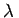

Für einen festen Wert des Parameters gibt es zwei Fälle:
Das inhomogene Randwertproblem besitzt eine eindeutige Lösung bei beliebigem , während das zugehörige homogene Problem lediglich die triviale, identisch verschwindende Lösung besitzt, oder
das zugehörige homogene Problem besitzt nichttriviale, d.h. nicht identisch verschwindende Lösungen. Dann ist das inhomogene Problem nicht für beliebige rechte Seiten lösbar; im Falle der Existenz einer Lösung ist diese nicht eindeutig bestimmt.
Die Werte des Parameters , für die der zweite Fall eintritt, d.h. das homogene Problem eine nichttriviale Lösung hat, werden Eigenwerte des Randwertproblems genannt, die zugehörigen nichttrivialen Lösungen seine Eigenfunktionen. Die Aufgabe, die Eigenwerte und Eigenfunktionen der Differentialgleichung (9.64a) zu bestimmen, nennt man das STURM-LIOUVILLEsche Problem.